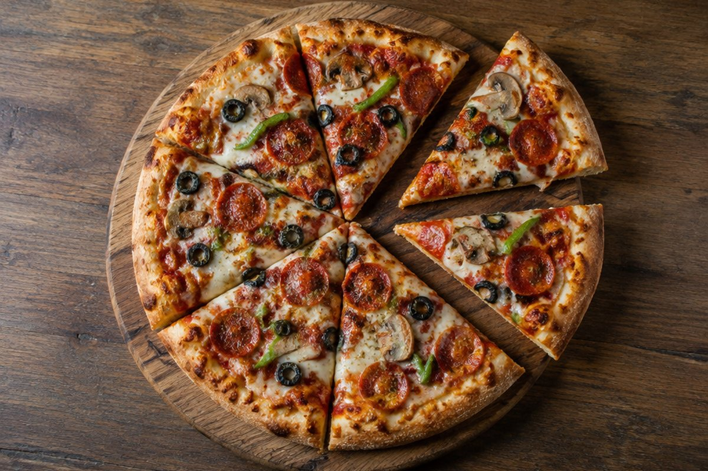

피자를 똑같이 나누면 어떤 수가 될까?

피자 한 판을 친구 4명과 똑같이 나눠 먹으면 나는 얼마만큼 먹는 걸까요? 이럴 때 쓰는 수가 바로 분수예요.
똑같이 나누어야 분수예요
분수는 전체를 '똑같이' 나눈 것 중의 몇 개인지 나타내는 수예요. 크기가 서로 다르게 나누면 분수로 말할 수 없어요.
피자 한 판을 똑같이 4조각으로 나눈 것 중 1조각은 4분의 1이라고 읽고 1/4이라고 써요.
피자 1판을 똑같이 4조각으로 나눈 것 중 1조각 → 1/4 (4분의 1)
분모와 분자
분수에서 가로선 아래에 있는 수를 분모, 위에 있는 수를 분자라고 해요.
분모는 전체를 몇 개로 똑같이 나누었는지, 분자는 그중 몇 개인지를 알려 줘요. 분자가 1인 1/2, 1/3, 1/4 같은 분수를 단위분수라고 해요.
3/5 → 전체를 똑같이 5로 나눈 것 중 3개 (분모 5, 분자 3)
진분수, 가분수, 대분수
분자가 분모보다 작은 분수는 진분수예요(예: 2/3). 분자가 분모와 같거나 분모보다 큰 분수는 가분수예요(예: 4/4, 7/4).
1과 3/4처럼 자연수와 진분수로 이루어진 분수는 대분수라고 해요. 가분수는 대분수로, 대분수는 가분수로 바꿀 수 있어요.
7/4 → 1/4이 7개 → 4개가 모이면 1이 되므로 1과 3/4
이렇게 풀어요: 어떤 수의 분수만큼 구하기
12의 2/3가 얼마인지 구해 볼까요? ① 12를 똑같이 3묶음으로 나눠요. ② 한 묶음에는 4개가 있어요. 이것이 12의 1/3이에요.
③ 2/3는 그런 묶음 2개이므로 4 + 4 = 8이에요. 분모만큼 묶음을 만들고, 분자만큼 묶음을 세면 돼요.
12의 1/3 = 4, 12의 2/3 = 8
분수의 크기 비교
분모가 같은 분수는 분자가 클수록 더 큰 분수예요. 2/7보다 5/7이 더 커요.
단위분수는 분모가 클수록 한 조각이 작아져서 더 작은 분수가 돼요. 그래서 1/3이 1/5보다 커요.
1/3 > 1/5 (3조각으로 나눈 한 조각이 5조각으로 나눈 한 조각보다 커요)
핵심 낱말
- 분수
- 전체를 똑같이 나눈 것 중의 몇 개를 나타내는 수
- 분모
- 가로선 아래의 수, 전체를 몇으로 나누었는지
- 분자
- 가로선 위의 수, 그중 몇 개인지
- 단위분수
- 분자가 1인 분수
- 가분수
- 분자가 분모와 같거나 큰 분수
- 대분수
- 자연수와 진분수로 이루어진 분수
한 줄 정리
- 분수는 전체를 똑같이 나눈 것 중의 몇 개를 나타내요.
- 분모는 나눈 개수, 분자는 그중 몇 개인지를 알려 줘요.
- 분모가 같으면 분자가 클수록, 단위분수는 분모가 작을수록 커요.
학교 교육과정 연결
- [4수01-09] 양의 등분할을 통하여 분수의 필요성을 인식하고, 분수를 이해하고 읽고 쓸 수 있다.
- [4수01-10] 단위분수, 진분수, 가분수, 대분수를 알고, 그 관계를 이해한다.
- [4수01-11] 분모가 같은 분수끼리, 단위분수끼리 크기를 비교하고 그 방법을 설명할 수 있다.